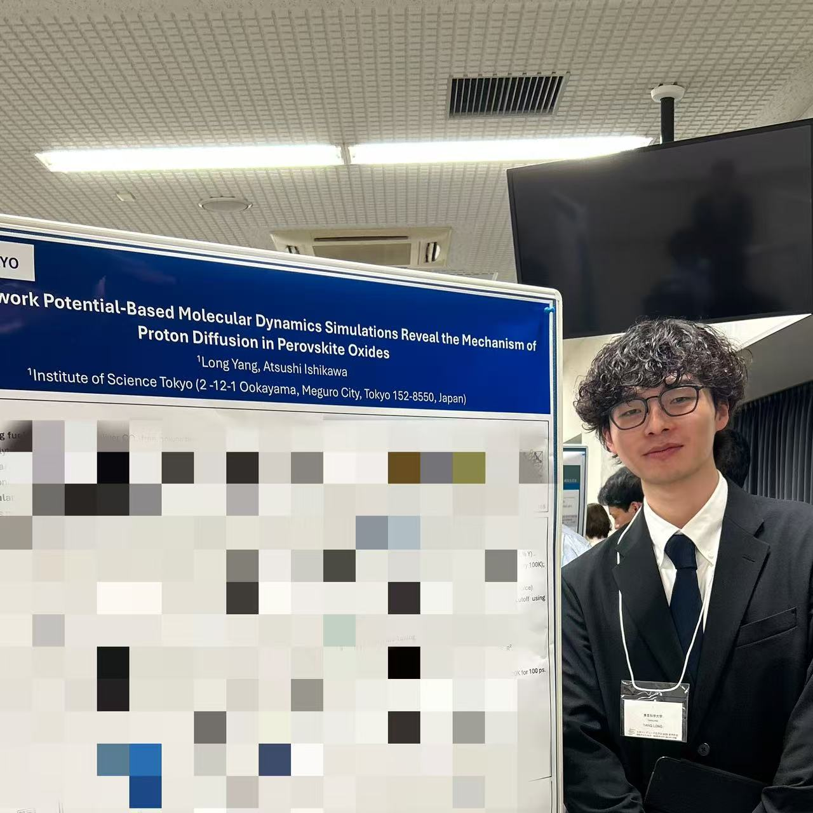
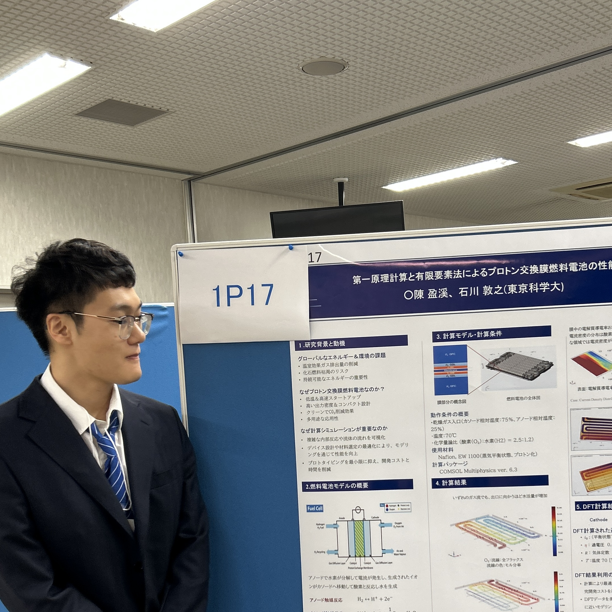
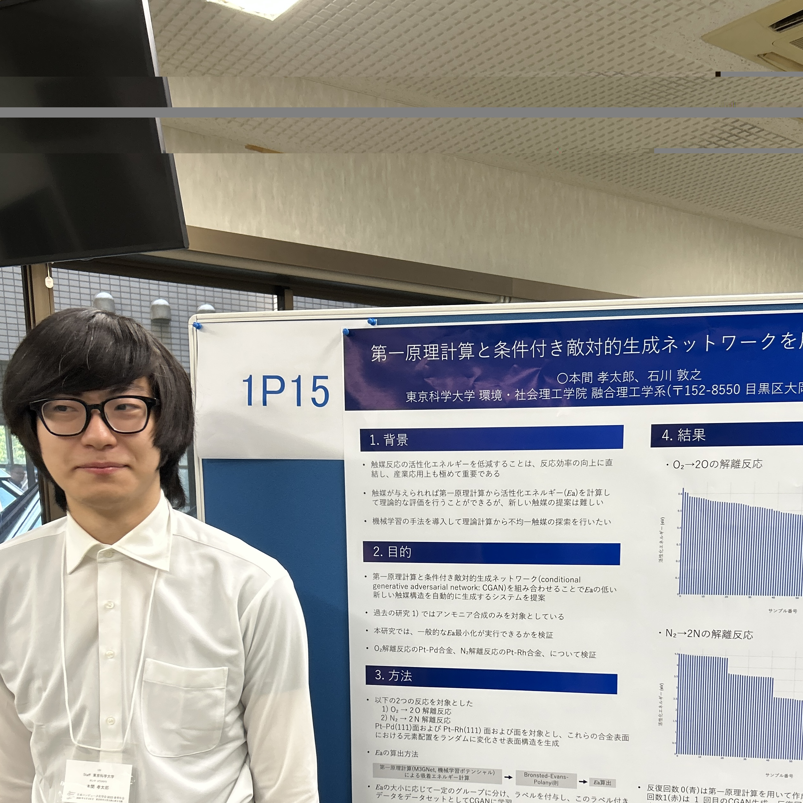
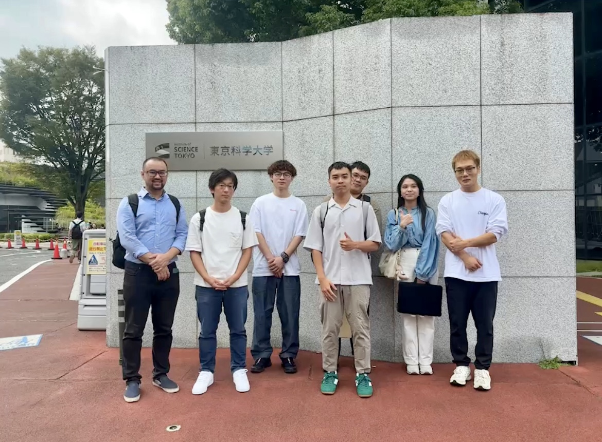
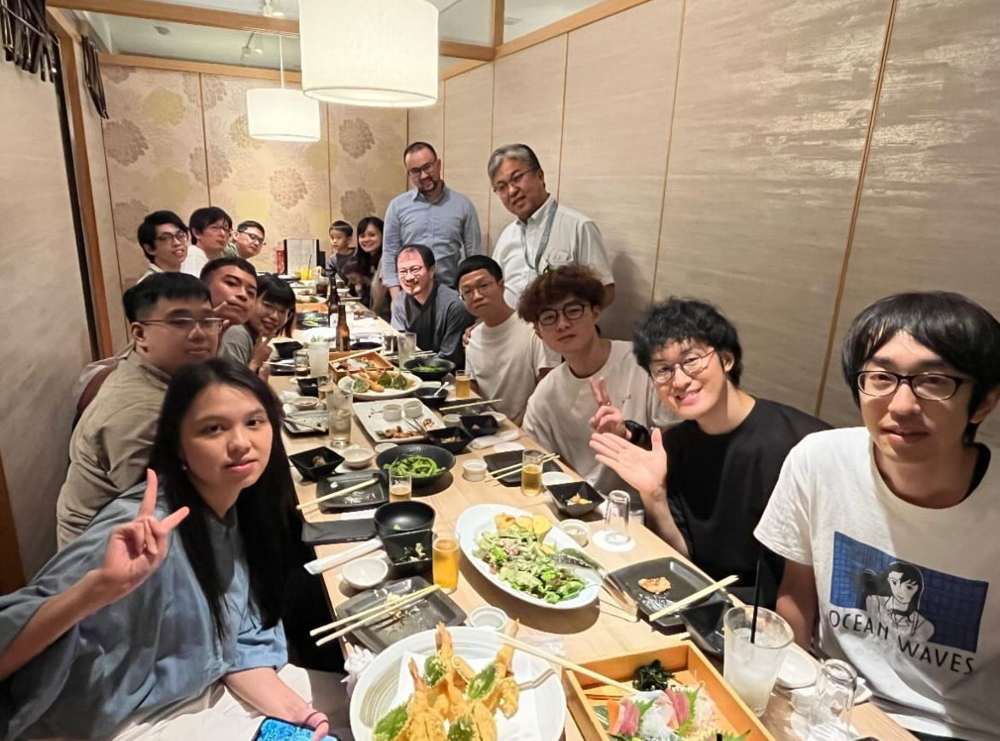
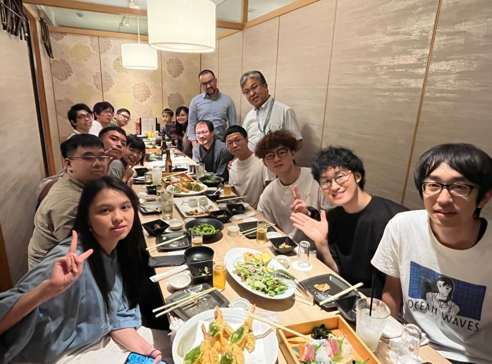
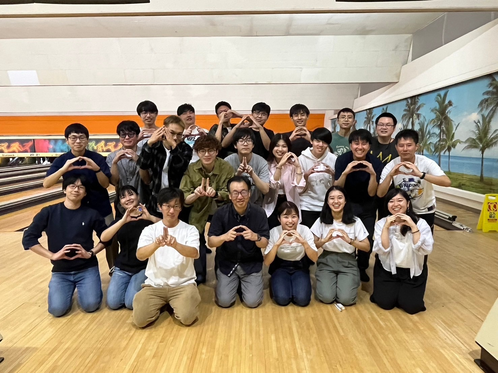
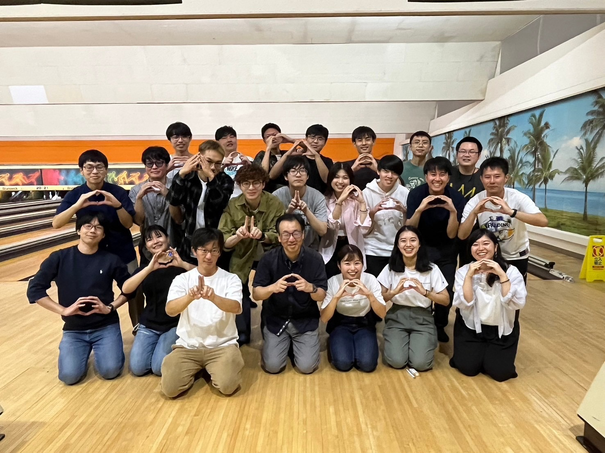

研究室活動
-
日本コンピュータ化学会2025春季年会にて学生発表
(2025年6月6日)
YANGさん、CHENさん、本間さんが発表を行いました。
  
-
SCEJ会2025春季年会にて学生発表 (2025年3月13日)
YANGさんが発表を行いました。

-
国立成功大学Hong-Kang Tian教授研究室訪問
(2024年10月17日)
台湾国立成功大学のHong-Kang Tian教授とメンバーが当研究室を訪問し、研究交流を行いました。
 

-
夏合宿＠那須塩原 (2024年9月28日-29日)
石川研究室と大友研究室の夏合宿を那須塩原にて開催しました！
 

2025
2024